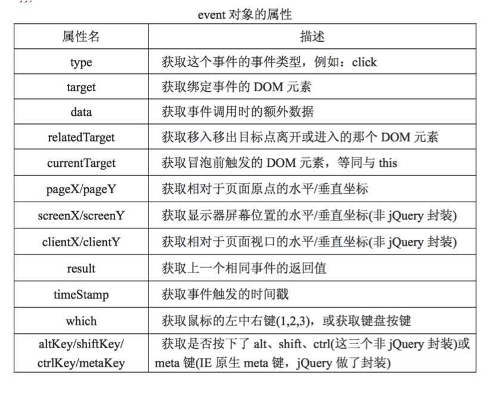

JavaScript以事件驱动来实现页面的交互，其核心是以消息为基础，以事件来驱动。虽然利用传统的JavaScript事件处理方式也能够完成页面交互，但jQuery框架增加并扩展了基本的事件处理机制，jQuery框架提供了更加优雅的事件处理语法，并极大的增强了事件处理能力。
6.1 事件处理简单说明
jQuery框架在JavaScript的基础上进一步封装了不同类型的事件模型，形成了一套更强大和优雅的“jQuery事件模型”。
jQuery中的事件模型表现出以下特征：
① 使用DOM事件模型中标准的事件类型名称。
② 统一了事件处理中的各种方法。
③ 允许为每个元素的每个事件类型建立多个处理程序。
④ 统一了事件对象的传递方法并规范了事件对象的常用属性和方法。
⑤ 为事件管理和操作提供了统一的方法。
6.2 绑定事件
在jQuery中，我们可以有多种方式来为标签绑定事件，可以简单的区分为专用方法绑定事件和快捷方法绑定事件。
① 快捷方法绑定事件
jQuery框架中定义了24个快捷方法来为标签绑定特定类型的事件，这些方法和二级事件模型中的事件类型对应，名称相同。
具体的快捷方法如下：
1
2
3
4
5
6
7
8
9
10
11
12
13
14
15
16
17
18
19
20
21
22
23
24
| blur() 当元素失去焦点时发生 blur 事件
change() 当元素的值发生改变时，会发生 change 事件
click() 当点击元素时，会发生 click 事件
dbclick() 当双击元素时，会发生 dblclick 事件
error() 当元素遇到错误（没有正确载入）时，发生 error 事件
focus() 当元素获得焦点时，发生 focus 事件
focusin() 当元素获得焦点时，发生 focusin 事件(包括子元素)
focusout() 当元素失去焦点时，发生 focusout事件(包括子元素)
keydown() 当按键被按下时，发生 keydown 事件
keyup() 当按键被松开时，发生 keyup 事件
keypress() 当按键被按下时，发生 keypress事件（响应每个字符）
mouseenter()当鼠标指针穿过元素时，会发生 mouseenter 事件
mouseleave()当鼠标指针离开元素时，会发生 mouseleave 事件
mouseover() 当鼠标指针位于元素上方时，会发生 mouseover 事件
mouseout() 当鼠标指针从元素上移开时，会发生 mouseout 事件
mousedown() 当鼠标进入元素，并按下按键时，会发生mousedown事件
mouseup() 当在元素上放松鼠标按钮时，会发生 mouseup 事件
mousemove() 当鼠标在指定的元素中移动时，会发生 mousemove 事件
resize() 当调整浏览器窗口的大小时，发生 resize 事件
scroll() 当用户滚动指定的元素时，会发生 scroll 事件
select() 当文本被选择时，会发生 select 事件
submit() 当提交表单时，会发生 submit 事件(表单)
load() 当指定的元素（及子元素）已加载时，会发生load事件
unload() 当用户离开页面时，会发生 unload 事件(1.8-)
|
② 专用方法绑定事件
jQuery中可以使用四种专用方法来绑定事件，分别是bind方法、live方法、delegate方法和on方法,每个版本各有区别，建议使用on方法。
补充说明
1
2
3
4
| bind方法适用于所有的版本，1.7+ 推荐使用on方法来代替。
live方法适用于 1.9- 的版本，1.9+ 版本使用on方法来代替。
delegate方法适用于1.4.2 + 的版本。
on方法适用于1.7+ 的版本，1.7+ 用于替代bind和live方法。
|
on方法为指定的元素添加一个或者是多个事件，并规定这些事件发生时指定的函数。
on方法的语法：on（eventType,childselector,data,function）
参数说明：
eventType：必传参数，指定事件的类型如click等。
childselector：可选参数，用于事件委托。
data：可选参数，设计需要传递的数据。
function：必传参数，事件发生时，执行的函数。
示例代码
1
2
3
4
5
6
7
8
9
10
11
12
13
14
|
$("button").click(function () {
console.log("点击了按钮---1");
});
$("button").click(function () {
console.log("点击了按钮---2");
});
$("button").on("click",{name:"wendingding"},function (event)
{
console.log("点击了按钮----on");
console.log(event.data.name);
})
|
扩展：one方法的使用
one方法是on方法中的一种特殊使用方式，由one方法绑定的事件在执行一次响应之后就会失效。其设计思路是：在事件处理函数的内部注销当前事件
扩展：事件委托说明
事件委托是开发中常见的绑定事件方式，参考代码如下。
1
2
3
4
5
6
7
|
$("div").on("click","span",function () {
console.log("点击了标签");
})
|
6.3 注销事件
有时候我们需要把一些元素的绑定事件注销，可以使用off方法来注销事件。
注销事件的方法和注册事件的方法是相反的操作，参数和用法基本相同。
off方法的使用示例
1
2
3
4
|
$("button").off("click");
$("button").off("mouseenter",fn);
|
6.4 事件对象
在注册事件的时候，event对象实例将作为第一个参数传递给事件的回调函数，这和DOM事件模型是完全相同的。另外，jQuery统一了IE事件模型和DOM事件模型中event对象属性和方法的用法，使其符合DOM标准事件模型的规范。

在事件处理函数（回调函数）中，我们可以获取事件对象的相关信息。
1
2
3
4
5
6
7
8
9
10
|
$("button").on("click",{name:"zs"},function (event) {
console.log("点击了按钮----2");
console.log(event.type);
console.log(event.target);
console.log(event.data);
})
|
6.5 事件冒泡
事件冒泡的简单解释：如果某个标签的事件被触发，那么该标签父标签上被注册的相同类型事件也会被触发，并且会依次一直冒泡到顶端。
1
2
3
4
5
6
7
8
9
10
11
12
13
14
15
16
17
18
19
20
21
22
23
24
25
26
27
28
29
30
31
32
33
34
35
36
37
38
39
40
41
42
43
44
45
| <html lang="en">
<head>
<meta charset="UTF-8">
<title>Title</title>
<script src="js/jquery-3.2.1.js"></script>
<style>
.box1{
width: 300px;
height: 300px;
background: red;
}
.box2{
width: 200px;
height: 200px;
background: green;
}
.box3{
width: 100px;
height: 100px;
background: yellow;
}
</style>
</head>
<body>
<script>
$(function () {
$(".box1").click(function () {
console.log("点击了box1");
})
$(".box2").click(function (e) {
console.log("点击了box2");
});
$(".box3").click(function () {
console.log("点击了box3");
})
})
</script>
<div class="box1">
<div class="box2">
<div class="box3"></div>
</div>
</div>
</body>
</html>
|
阻止事件冒泡的两种方式：
【1】在回调函数中返回false。
【2】调用事件对象的stopPropagation方法。
6.6 触发事件和默认行为
默认行为
默认行为：页面中的一些标签常常存在默认的行为，比如表单的submit事件类型，如果该类型的事件被触发，则会导致表单的提交；比如a标签存在跳转网页连接的默认行为等。如果需要在事件被触发的时候，阻止标签默认的行为，可以考虑在处理函数内部调用事件对象的preventDefault()方法。
触发事件
触发事件：页面中标签的事件都是在特定条件下发生的，所以不同类型的事件触发时间其实无法预测。但有的时候，我们可能需要控制事件发生的时机。这时候，可以考虑使用trigger()或者是triggerHandler()方法来触发事件。
语法说明：
trigger(type),[data]
triggerHandler(type),[data]
参数说明：
type参数表示事件的类型，以字符串的形式传递。
data参数是可选的，利用该参数可以向事件的回调函数传递额外的数据。
代码示例：
1
2
3
|
$(".box3").trigger("click");
$("input").triggerHandler("click");
|
trigger和triggerHandler方法的对比
① triggerHandler方法不会触发标签的默认事件。
② triggerHandler方法只会触发jQ实例对象集合中第一个元素的事件回调。
③ triggerHandler方法返回的是事件回调函数的返回值，而非jQ对象。